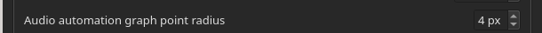
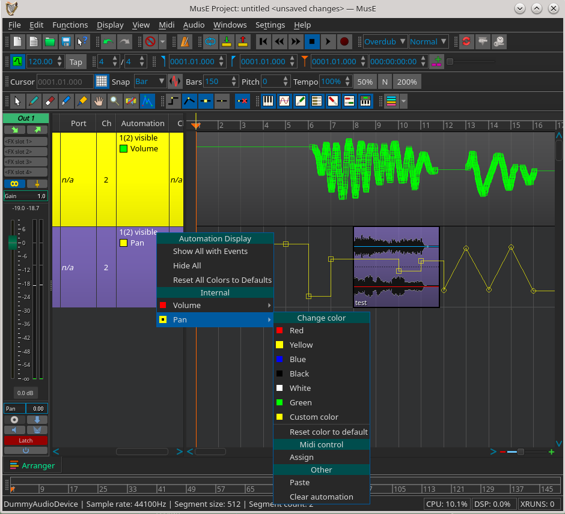
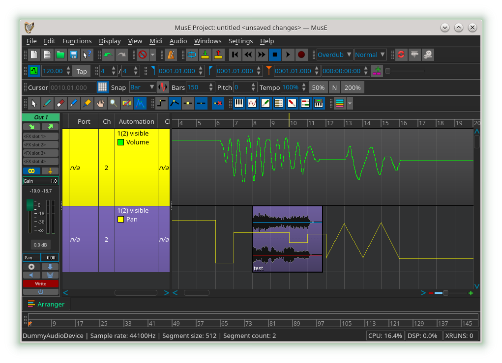
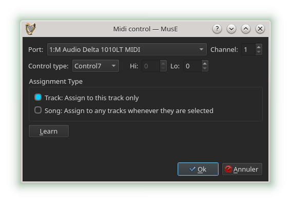

Automation
Automation is the ability to record (or construct) and playback exact sequences of control movements.
MusE can automate both MIDI and audio but they are handled somewhat differently although they share a number of similarities.
Audio automation
Almost all graphical audio controls in MusE can be automated. This includes an audio track’s volume and pan, and the controls of any plugins in the effects rack, and if the track is a synthesizer track, all of the synth’s controls.
Each control has a manual adjustment value. This value is shown when there is no automation data at all, or automation has been disabled.
For plugin and synth controls, it is usually more desirable to manipulate automation with the generic plugin GUIs, because MusE has full control over their behaviour. (See plugin GUIs).
There are a few ways to enter audio automation data:
- By adjusting audio controls while the transport is rolling. MusE will record the exact movements.
- By adjusting audio controls while the transport is stopped, at different transport positions. TOUCH mode allows this.
- By right-clicking any audio control and choosing an operation from the automation popup menu. This includes storing, erasing, and clearing automation events, and seeking the next or previous event.
- By drawing the data on the audio track’s automation graphs. (See track automation).
Audio automation modes
Each audio track strip has an automation mode button at the bottom. There are five automation modes:
- OFF:
Disables all automation, uses manual value always. - READ:
Automation data is applied to controls. If any automation data exists, the manual value is overridden and has no effect. - TOUCH:
Allows you to alter a control at any time, while transport is stopped or rolling, If rolling, when the control is released it returns to reading from automation data. - LATCH:
Allows to adjust an initial value before rolling the transport. While rolling, when the control is released it does not return to reading from automation data. - WRITE:
Similar to LATCH mode but in WRITE mode everything from the start to the end of recording is erased, even if the control was not touched until later - but it must have been touched at least once.
Choose which graphs are shown by right-clicking the Automation column in the track pane.
To draw, edit, or erase points on the graph, first select the Edit Automation tool on the Tools toolbar. Two types of points can be drawn. Discrete, which are flat steps between points, and Interpolated, which are slopes between points. The Automation toolbar has two buttons for that. There is also a button that eliminates redundant recorded straight-line points. Here is the Automation toolbar (with the Edit Automation Tool toolbar button showing to the left):

Selected points can be easily converted between the two types by right-clicking any area on the graph and using the Graphs popup menu item. Note that some controller types might not support interpolation. Discrete points are shown as boxes on the graph while interpolated points are shown as circles. The size of the points is adjustable in the Global Settings > GUI tab.

Here is a screenshot of automation WRITE mode, and some discrete and interpolated automation data with exaggerated point size, and the track pane automation popup menu showing (see track automation):

Two more buttons on the Automation toolbar control whether the points are shown at all. Here they are off:

The graphs fully support copy/paste/cut/delete operations. Selected points on a single graph can be copied and pasted to another graph, even in another track.
Selected points can be dragged around the graph. Holding the control key before dragging creates a copy of them when dropped. Pressing the shift key before dragging restricts motion horizontally or vertically depending on which direction the points are moved. Holding the shift key while dragging the points turns of snapping to the grid, for fine-grained movement.
When points on a graph are dragged and dropped, there is a setting in the graph right-click Graphs menu which determines how existing points are erased underneath the dropped points. No erasing can be chosen, but note that dropping a point directly over an existing point still replaces the existing point with the dropped one. Existing points can be erased between dropped points, but any gaps (unselected points) in the original selected points are not erased underneath the dropped points. A third setting erases everything between the leftmost and rightmost dropped points - even if there were unselected points in between the original selected points.
While dragging points around, depending on the erase setting colored areas may be shown. These indicate what WOULD be erased if dropped. These colored areas allow FURTHER movement of the points after dropping them, WITHOUT erasing anything underneath the drop positions. After dropping the points, the colored areas persist until a blank area is clicked or End Paste Drop Mode is clicked in the context menu. It is only when these colored areas disappear, that actual changes and erasures on the track take place. There is no 'cancel drop' feature since Undo (and Redo) already handle it, remembering the colored areas too.
Here are two groups of points being moved, while the erase mode is normal (respecting gaps):

Audio automation midi assignment
All audio controls can be manipulated by midi input. This is called assigning a midi controller to an audio controller.
The midi assignment dialog window can be accessed as shown in one of the pictures above by right-clicking any controller in the track list and navigating the popup menu to the desired controller and clicking 'Assign' under the heading 'Midi control'. Alternatively, any on-screen audio control (such as volume or pan or generic plugin UI controls) can be right-clicked, and a similar popup menu will appear where you click 'Assign' under the heading 'Midi control'.

The exact midi controller input port, channel, controller type, and high and low control numbers can be entered.
An easier way is to click the 'Learn' button. While the button is down, manipulate any input midi device connected to MusE, and the correct values will automatically be filled in provided it did actually receive something from midi input.
If you are satisfied that the desired input midi controller has been chosen, click OK. The dialog will close and from now on, adjusting the midi controller will automatically adjust the audio control it is assigned to.
In that same the popup menu, under the heading 'Midi control', information about the assignment is shown. The assignment can be cleared and removed by clicking 'Clear'.
Two additional buttons may also be shown in the assignment dialog: 'Track' and 'Song'. 'Track' assigns to an audio control on the given track only. 'Song' dynamically assigns to ANY tracks having that audio controller when the tracks are selected (highlighted) in the track list or in the mixer, and when the tracks are no longer selected the assignment disappears.
Some important technical info about logarithmic audio controls
With the exception of our built-in audio logarithmic volume controllers (for which we have the luxury of having a minimum slider decibel Global Setting), some logarithmic plugin controllers specify a minimum value of 0.0.
This presents a problem: When we want to display or manipulate (increment, adjust) the value in units of decibels, there is no specification of what a reasonable minimum decibel value would be. No plugin architecture has such a specification for this value. A minimum decibel value MUST be chosen before any math can be performed in units of decibels. It cannot be -inifinte decibels as the stated 0.0 minimum log value suggests. Otherwise you end up with NAN infinite values and so on.
When a plugin's minimum log value states it is 0.0, it implies that it is up to the user (or the app) to choose a minimum decibel value. Unfortunately MusE doesn't currently have per-controller user-settable decibel minimums and maximums. It would be a lot of user micro-management. And without an 'overview' window, the user might be lost, unsure of how many of the potentially hundreds of controllers available have what particular settings.
So there was no choice but to 'compose' or 'educated guess' pick a minimum decibel value based on the overall value range of the controller. What this means is that a plugin's native UI logarithmic control might jump to -infinite dB a bit too soon when its corresponding generic UI control is moved towards zero.
A random example is the LSP suite of plugins. Some of their plugin native UIs have 'level' controls which, when rotated clockwise, jump from -infinite dB to -80 dB, and then smoothly rise to say, 60 dB. But our generic UI version of that control has no way of knowing that the plugin control's minimum dB value is -80 dB before it jumps down to -infinite dB. There is no specification of that value in any plugin architecture. Therefore the semi-educated minimum dB value that is picked by the application might be somewhat higher than -80dB. This means the native control might jump a bit too soon from a minimum value that was picked of say, -60dB, down to -infinite dB, as the corresponding generic UI control is lowered.
The exact same rules apply to midi-to-audio controller assignment discussed here. You may see the native UI control jump a bit too soon to -infinite dB as the the external midi controller is lowered.
There is another problem with logarithmic plugin controls: There is no way to know whether a logarithmic control should be displayed in decibels, frequency (Hertz), pure log, or some other units. Even when the plugin's own native UI displays the control in units of decibels for example, there is no reliable mechanism by which we can know that we too, in our generic UI, should also show it in decibel units. Logarithmic controls whose units are of frequency (Hertz) face a similar problem.
Once again, it would be up to the user (or the app) to choose how to display every available logarithmic control in our generic plugin UIs - as decibels, frequency (Hertz), pure log, or some other unit. It would be yet more user micro-management.
In future releases this level of manipulation might be possible to add to MusE. But for now, you will see a plugin's native UI logarithmic controls in decibels, Hertz or other units, while our corresponding generic UI controls will always be shown in pure logarithmic units.
Midi automation
MIDI automation is a slightly different concept: Unlike audio automation, currently there is no automation ‘mode’ and it doesn’t record graphical control movements. Data is viewed from within the pianoroll and drum editors, by clicking on the ‘Ctrl’ button on those canvases.
Similar to audio controls, each midi control has a manual adjustment value. This value is overridden when there is midi automation data.
There are a few ways to enter MIDI automation data:
- By adjusting external MIDI controls (such as a midi keyboard pitch or modulation wheel) while the transport is rolling and both the transport and midi track are in record mode. MusE will record the exact movements. As mentioned earlier, note that graphical control movements are not recorded.
- By right-clicking any midi control and choosing an operation from the automation popup menu. This includes storing and erasing automation events.
- By drawing the data on a midi part’s automation graphs.
Here is a screen shot of a midi track, containing a midi part which has been opened with the pianoroll editor and automation data showing.
The ‘Ctrl’ popup menu (bottom left) shows available midi controllers and the green dot indicates there is some data.